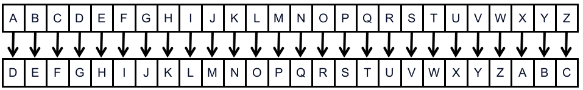
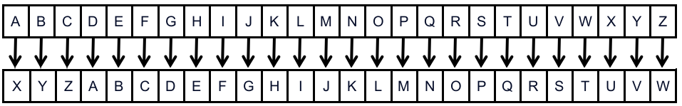

Шифр Цезаря
У криптографії шифр Цезаря є одним із найпростіших і найвідоміших методів шифрування. Метод названий на честь римського імператора Юлія Цезаря, який таким чином надсилав секретні повідомлення своїм військовим.
У випадку, якщо повідомлення було перехоплено, ворог не міг його зрозуміти, оскільки на вигляд це був безладний набір символів.
Це забезпечувало Цезарю значну стратегічну перевагу, адже вороги не могли довідатись про його воєнні плани.
Як це працює?
Шифр Цезаря має ключ, який забезпечує шифрування та дешифрування.
Ключ — це ціле число, визначене відправником повідомлення, і для того щоб одержувач міг розшифрувати і прочитати повідомлення, він також має знати цей ключ.
Шифрування

Зсув праворуч на 3
Шифрування — це зсув праворуч кожної літери повідомлення на відстань, визначену ключем, для отримання символа зашифрованого тексту.
Ворог побачить зашифрований текст замість справжнього повідомлення.
Для прикладу, Цезар хотів написати «BALLISTA» своєму воєначальнику. Визначивши ключ шифрування рівним 3, Цезар повинен посунути кожну літеру свого повідомлення на три позиції вправо, щоб отримати зашифрований текст.
Шифрований текст «BALLISTA» — «EDOOLVWD»:
B → E, A → D, L → O, L → O, I → L, S → V, T → W, A → D
Розшифрування

Зсув ліворуч на 3
Після того, як Цезар зашифрував своє повідомлення, воно стає незрозумілим для супротивника.
Але якщо одержувач його не розшифрує, він також не зрозуміє повідомлення.
Дешифрування дуже схоже на шифрування, єдина відмінність полягає в тому, що літери не зміщуються праворуч, а ліворуч.
Процес дешифрування для «EDOOLVWD»:
E → B, D → A, O → L, O → L, L → I, V → S, W → T, D → A
Результат: BALLISTA